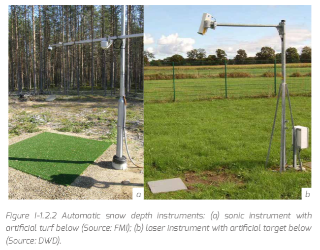
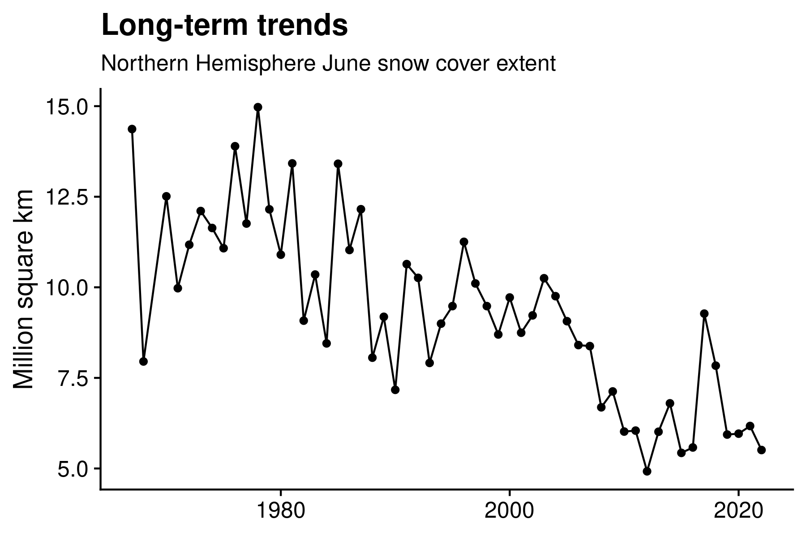

Snow cover in a changing climate
Introduction to Climate Change - UniTrento 2024/25
2025-05-19
Albedo … more examples

Snow as natural water storage


2022 Drought in the Po valley


2022 Drought in the Po valley -> Snow drought


In-situ




Seasonality


Inter-annual variability

Long-term trends

Magnitude of area covered by snow
January on average 47 million km² ~
- 150 Italys
- 7580 provinces of Trento
- 1/3 Northern Hemisphere land surface
Data source: Alpine-wide in-situ observations

Introduction to k-means
Unsupervised classification technique

Data source

Global vs. local
5-year averages
(2018-2022)

Climate and weather models

What is what?
- Foto from the astronauts of Apollo 17 (7 December 1972)
- Weather model simulation (7 December 1972)
Assumptions …
CMIP6, IPCC AR6 2021: Shared Socioeconomic Pathways
- a world of sustainability-focused growth and equality (SSP1)
- a “middle of the road” world where trends broadly follow their historical patterns (SSP2)
- a fragmented world of “resurgent nationalism” (SSP3)
- a world of ever-increasing inequality (SSP4)
- a world of rapid and unconstrained growth in economic output and energy use (SSP5)
- plus many other socio-economic assumptions on population growth, GDP development, …
Source: Wikipedia and CarbonBrief
{kind=link}

-> Combined with radiative forcing in W/m², which can be related to mitigation targets
… translated into CO2 …

Source: Wikipedia
… translated into global climate

Source: mooc.fi